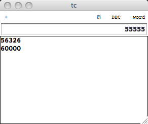
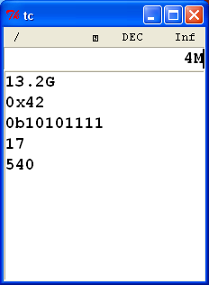

This is a little calculator app I worte up to better fit my needs than a typical default one. It has a few features that I found I wanted.
First thing most noticable is that there are no little gui buttons. Everything is reachable from the keyboard, so I see no reason to build a bunch of buttons that just get in the way.
It has a stack for memory storage, and is used in completing operations. Even though there is a stack, the calculator is not postfix notation. All operations are still infix. This might seem a little odd, but I find it works quite well. You have the stack for doing some really deep stuff, but its all still infix which just seems more natural. (my opinion anyhows.)
It supports labeling decimal numbers using most of the SI standard labels. (The exception is deka- for which the official label is da, but I use D instead. By doing this all the labels are a single character.) Decimal and floating point numbers can be labeled, just type the label character in last. Hex, Oct, and Bin numbers cannot be labeled. The ‘best’ label for a number can also be calculated.
Numbers of different formats can be typed in at any time. You do not have to switch to hex mode to insert a hex number. Flip side to this is that hex, oct, and bin need to be prefixed with 0x, 0o, and 0b.
Screenshots:


Download: